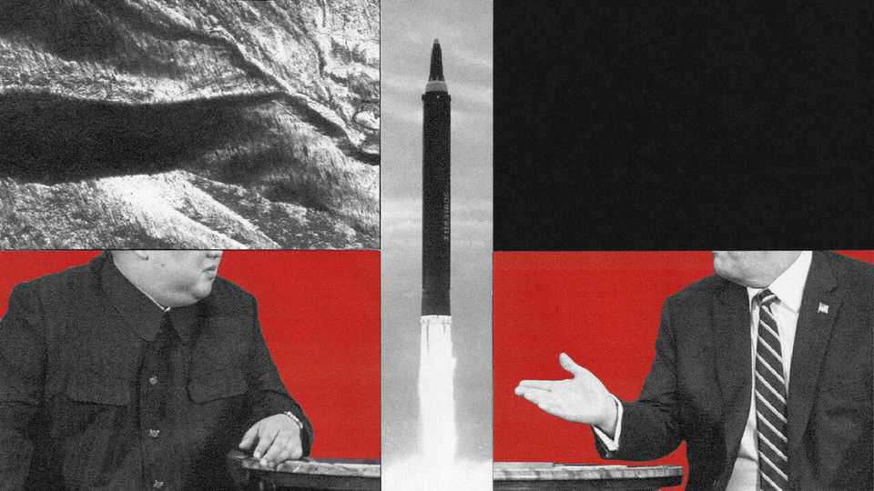
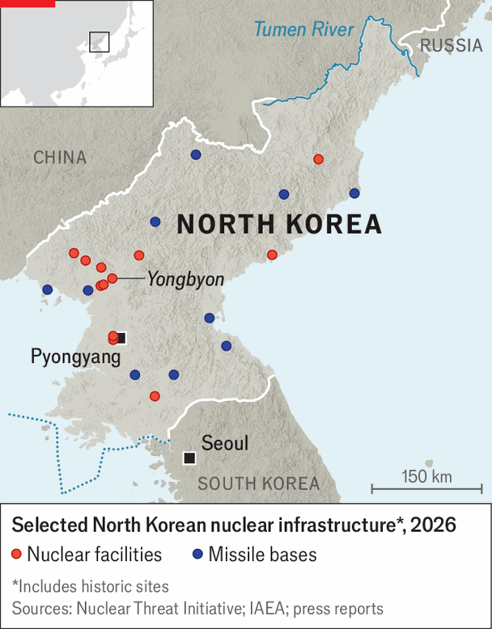

Will Donald Trump meet Kim Jong Un again?
North Korea wants America to drop demands for disarmament

Oct 1st 2026
SIX AMERICAN presidents have tried to deal with North Korea’s nuclear-weapons programme. Six have failed. Donald Trump would like another shot: he has said he expects to meet Kim Jong Un, North Korea’s dictator, this year. A planned trip to Asia for a summit of the Asia-Pacific Economic Co-operation (APEC) forum in November may provide an opening; Mr Trump’s former chief envoy to North Korea said in a recent speech that he may even propose meeting in Pyongyang, where no serving American president has ever been.
Yet Mr Kim has made it clear that he will meet only if America drops its longstanding demands for “denuclearisation”, diplo-speak for dismantling or removing his regime’s most potent weapons. Just one month after Mr Trump curtailed long-planned military exercises with South Korea in the hopes of rekindling his bromance with Mr Kim, the North Korean dictator, flanked by his teenage daughter, oversaw the test of a new purportedly hypersonic missile. The weapons would be an “incurable headache” for the country’s enemies, he crowed.

Mr Kim’s intransigence reflects a newfound confidence. For decades, America and its allies, together with China and Russia, tried to press North Korea to abandon its quest for the bomb. Despite those efforts, Mr Kim now possesses dozens of nuclear warheads, as well as missiles capable of carrying them to targets as far away as mainland America. A renewed alliance with Russia, forged in the war against Ukraine, has given Mr Kim economic and diplomatic breathing room. Principled opposition to a nuclear-armed North Korea is eroding. Russia openly accepts North Korea’s nuclear status, with its foreign minister calling it a “closed issue”; China has fallen silent on the matter. South Korea’s left-wing president, Lee Jae Myung, proposes leaving denuclearisation as a hoped-for future goal. Mr Trump may be tempted to follow. If he does, it would mark a major shift in American policy, with big implications for regional security and global non-proliferation efforts.
North Korea signed up to the Nuclear Non-Proliferation Treaty (NPT) in 1985, agreeing to forgo nuclear weapons in exchange for help with civilian nuclear power. But despite that, it soon began secretly working towards a nuclear arsenal. Several rounds of international negotiations and wide-ranging economic sanctions over the ensuing decades failed to stop its progress; North Korea conducted six nuclear tests between 2006 and 2017. During his first term, Mr Trump imposed what he called “maximum pressure” sanctions, threatened Mr Kim with “fire and fury”, and then agreed to the first-ever summit between the leaders of America and North Korea. But at a second meeting the talks broke down in acrimony.
American leverage over North Korea has weakened since. In the past, economic sanctions could hurt the government in Pyongyang: during the summitry of Mr Trump’s first term, Mr Kim sought relief from them in exchange for closing down Yongbyon, his main nuclear complex. But in recent years, North Korea has enjoyed a windfall for backing Vladimir Putin’s war against Ukraine. North Korea has sent Russia artillery shells and ballistic missiles, as well as some 16,000 troops. Thanks in part to this newfound Russian support, North Korea’s economy appears to be growing, albeit unevenly. South Korea’s central bank estimates that North Korea’s economy expanded at a punchy average of 3.4% annually from 2022 to 2025.
The alliance between North Korea and Russia is deepening. In early September the first road bridge linking the two countries opened over the Tumen river. Russia issued more than 35,000 student visas to North Koreans last year; many are suspected of working in Russia, including in factories making drones for the war effort. Ukrainian officials fret that North Korea is preparing a fresh deployment of troops to aid Russia this autumn. “We co-operate as equal partners; we have things we want and need from each other,” says one Russian scholar. In addition to food, fuel and money, North Korea primarily wants high-end technology. South Korean officials worry about Russia helping Mr Kim build a nuclear-powered submarine.
This support from Russia has also let Mr Kim revive his relationship with China, which fears losing influence over its neighbour, and has left him correspondingly not much interested in rekindling a bromance with Mr Trump. Since their initial meetings, North Korea has also made significant strides in its weapons programme. In the past, North Korea’s nuclear arsenal was nascent enough that stopping it might have been possible. North Korea enshrined its nuclear status in its constitution in 2023. Now Mr Trump says the country has 57 nuclear warheads; independent estimates put the number as high as 120 (Britain possesses 225).
The regime shows no signs of stopping there. A new uranium-enrichment facility has been spotted at Yongbyon, according to the UN’s International Atomic Energy Agency. Mr Lee, South Korea’s president, says that North Korea currently produces enough fissile material to make ten to 20 additional warheads each year.
Mr Trump’s war on Iran has vindicated the Kim family’s bet on nuclear weapons as the ultimate security guarantee: though Iran was close to having the bomb, it never crossed the nuclear threshold. “Especially after the war in Iran, I believe that North Korea will be more inclined to not give up its nuclear arsenal,” Mr Lee told The Economist in June.
Calls have thus been growing for a new approach that shifts the focus away from pressing North Korea to give up its nukes and towards restarting dialogue with the hopes of merely slowing its progress. Mr Lee, who leads a party that tends to favour engagement, proposes a phased approach that would begin with a freeze on the North’s nuclear programme.
In America, too, the winds are shifting. Victor Cha, who helped to lead negotiations with North Korea during the George W. Bush administration, argues that America should now shift from insisting on denuclearisation to instead seeking a “cold peace” with North Korea, based in part on arms-control negotiations. While American officials still speak of full denuclearisation as an ostensible goal, Mr Trump has taken to referring to North Korea casually as a “nuclear power”.
Recognising North Korea as a nuclear state, even tacitly, would hand Mr Kim a long-sought prize. Mr Kim told his elites that if the country stayed the course, America would cave and acknowledge North Korea’s nuclear status, much as it did with Pakistan, says Thae Yong Ho, a high-level North Korean diplomat who defected in 2016.
Unlike Pakistan (or India) North Korea signed the NPT and acquired nuclear technology provided it would be for peaceful use. So legitimising its nuclear weapons now could set a worrying precedent for future proliferators. An agreement that leaves North Korea’s arsenal intact while letting Japan and South Korea feel exposed could also push America’s allies closer to developing nuclear weapons of their own. By trying to solve a devilish problem, Mr Trump risks creating new ones. ■
For exclusive coverage of Asian politics, economics and security, sign up to Asia Bulletin, our weekly subscriber-only newsletter.